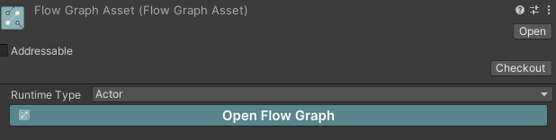

Runtime Architecture
Following is the runtime architecture of Flow. Flow provides a variety of different Container types,
which are highly compatible with Unity's native MonoBehaviour and ScriptableObject architecture, allowing you to choose your favorite workflow.
FlowGraphObject
In Unity, we use MonoBehaviour to add functionality to GameObjects in the scene.
In Flow, you can use FlowGraphObject and its inherited components to implement your game logic, such as character controllers, interactions, etc.
FlowGraphAsset
FlowGraphAsset is a ScriptableObject used to reuse FlowGraph. You can set the IFlowGraphRuntime type it plays at runtime.

In Editor Mode, the graph editor will consider the owner of the Flow Graph to be the type you set, which is the Actor type as shown in the figure. Create Property/Self Reference node, you will see the port type is Actor.

FlowGraphInstanceObject
FlowGraphInstanceObject is a MonoBehaviour used to creating flow graph from FlowGraphAsset at runtime.
Here is an example, create a new class named TestInstanceObject:
using Ceres.Graph.Flow;
using Ceres.Graph.Flow.Annotations;
public class TestInstanceObject: FlowGraphInstanceObject
{
[ImplementableEvent]
public void Awake()
{
}
}
Then create a new FlowGraphAsset and set the RuntimeType. Open flow graph and implement Awake event.

Create a new GameObject in scene and add TestInstanceObject component to the GameObject. Drag the FlowGraphAsset to the TestInstanceObject and you will see the Awake event is invoked after entering play mode.
FlowGraphScriptableObject
Beside the use of data sharing, ScriptableObject can also be used as a logic container. You can use FlowGraphScriptableObject to implement logic from ScriptableObject directly which is useful to create skill, state machine, buff, dialogue, etc.
Compared with FlowGraphAsset, FlowGraphScriptableObject owns an instance of FlowGraph at runtime.